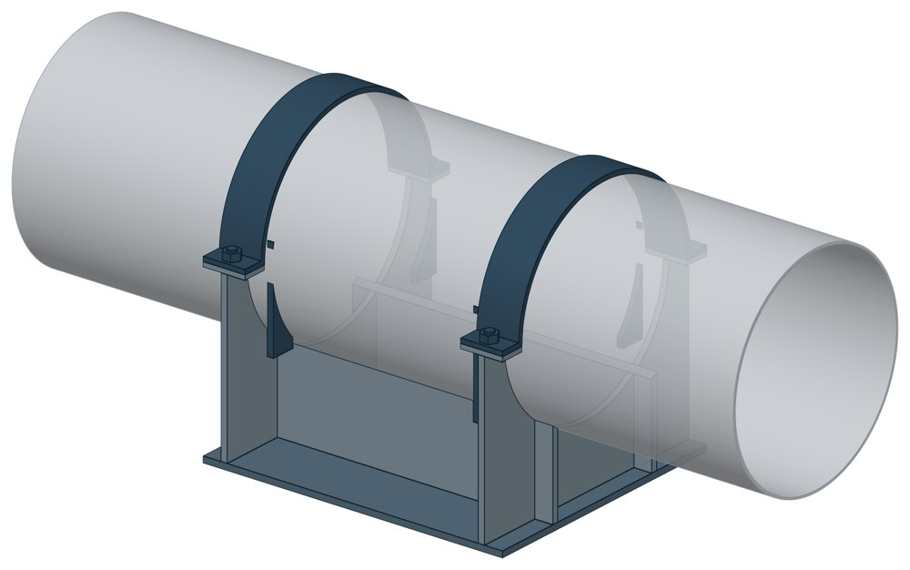

Двуххомутовые неподвижные опоры ОСТ 108.275.26-80
ОСТ 108.275.26-80. Dн 194–720 мм, масса 25,5–237,2 кг.

- Диаметр трубы Dн
- 194–720 мм
- Документ
- ОСТ 108.275.26-80
- Исполнений
- 21
- Масса
- 25,5–237,2 кг
- 3D-модели
- у всех исполнений (условные: общий вид по габаритам)
Таблица исполнений ОСТ 108.275.26-80
| Обозначение | Код ПРОМБУРГ | Dнмм | Высотамм | Ширина опоры трубопроводамм | Длина опоры трубопроводамм | Массакг | 3D |
|---|---|---|---|---|---|---|---|
| 01 ОСТ 108.275.26-80 | ПБ-10826-0194-1 | 194 | 251 | 262 | 325 | 27,1 | 3D |
| 02 ОСТ 108.275.26-80 | ПБ-10826-0219-1 | 219 | 269 | 302 | 325 | 34,7 | 3D |
| 03 ОСТ 108.275.26-80 | ПБ-10826-0245-1 | 245 | 274 | 328 | 350 | 34,8 | 3D |
| 04 ОСТ 108.275.26-80 | ПБ-10826-0273-1 | 273 | 283 | 348 | 410 | 40,9 | 3D |
| 05 ОСТ 108.275.26-80 | ПБ-10826-0325-1 | 325 | 314 | 419 | 530 | 65,5 | 3D |
| 06 ОСТ 108.275.26-80 | ПБ-10826-0377-1 | 377 | 334 | 489 | 575 | 83,2 | 3D |
| 07 ОСТ 108.275.26-80 | ПБ-10826-0426-1 | 426 | 364 | 544 | 625 | 107,4 | 3D |
| 08 ОСТ 108.275.26-80 | ПБ-10826-0465-1 | 465 | 383 | 577 | 660 | 118,4 | 3D |
| 09 ОСТ 108.275.26-80 | ПБ-10826-0530-1 | 530 | 417 | 640 | 535 | 147,1 | 3D |
| 10 ОСТ 108.275.26-80 | ПБ-10826-0630-1 | 630 | 485 | 754 | 610 | 203 | 3D |
| 11 ОСТ 108.275.26-80 | ПБ-10826-0720-1 | 720 | 534 | 842 | 700 | 237,2 | 3D |
| Обозначение | Код ПРОМБУРГ | Dнмм | Высотамм | Ширина опоры трубопроводамм | Длина опоры трубопроводамм | Массакг | 3D |
|---|---|---|---|---|---|---|---|
| 12 ОСТ 108.275.26-80 | ПБ-10826-0194-2 | 194 | 251 | 254 | 325 | 25,5 | 3D |
| 13 ОСТ 108.275.26-80 | ПБ-10826-0219-2 | 219 | 269 | 302 | 325 | 30,1 | 3D |
| 14 ОСТ 108.275.26-80 | ПБ-10826-0273-2 | 273 | 283 | 348 | 410 | 39,9 | 3D |
| 15 ОСТ 108.275.26-80 | ПБ-10826-0325-2 | 325 | 314 | 429 | 530 | 64,3 | 3D |
| 16 ОСТ 108.275.26-80 | ПБ-10826-0377-2 | 377 | 334 | 489 | 575 | 80,7 | 3D |
| 17 ОСТ 108.275.26-80 | ПБ-10826-0426-2 | 426 | 364 | 544 | 625 | 104,7 | 3D |
| 18 ОСТ 108.275.26-80 | ПБ-10826-0465-2 | 465 | 383 | 577 | 660 | 115,6 | 3D |
| 19 ОСТ 108.275.26-80 | ПБ-10826-0530-2 | 530 | 417 | 640 | 535 | 144,3 | 3D |
| 20 ОСТ 108.275.26-80 | ПБ-10826-0630-2 | 630 | 485 | 754 | 610 | 189,2 | 3D |
| 21 ОСТ 108.275.26-80 | ПБ-10826-0720-2 | 720 | 534 | 842 | 700 | 234 | 3D |
Чтобы заказать, сообщите обозначение и код ПРОМБУРГ: +7 (499) 325-51-35, promburg@yandex.ru.
Нормативные документы
- ОСТ 108.275.26-80 Опоры неподвижные двуххомутовые трубопроводов ТЭС и АЭС. Конструкция и размеры — документ, по которому изготавливается изделие
Связанные позиции
- Соседний тип: ОСТ 108.275.29-80 — Опоры однохомутовые
- Парная подвижная опора: ОСТ 108.275.30-80 — Опоры двуххомутовые скользящего типа (общий диапазон Dн 325–720)
Собрать узел с этим изделием
- Конструктор узла: собрать участок с компенсатором под свои данные труба, длина, среда, условия — состав узла и спецификация бесплатно
На трубу Dн 194–720 мм в каталоге
Позиции каталога с исполнениями на те же наружные диаметры трубы.
Детали трубопровода
- Отвод стальной крутоизогнутый 90°, 09Г2С общих Dн: 8
- Отвод стальной крутоизогнутый 90° общих Dн: 8
- Фланец стальной воротниковый общих Dн: 8
- Фланец стальной плоский приварной общих Dн: 8
- Заглушка стальная эллиптическая общих Dн: 7
- Переход стальной концентрический общих Dн: 6
- Днище стальное эллиптическое общих Dн: 4
- Отвод нержавеющий 90° общих Dн: 1
Компенсаторы
- Компенсатор сильфонный 2ОПКР общих Dн: 8
- Компенсатор сильфонный 2ОПКР (ИЯНШ) 2ОПКРИ общих Dн: 8
- Компенсатор сильфонный 2СКУ.М 2СКУМ общих Dн: 8
- Компенсатор сильфонный 2СКУ.М (ИЯНШ) 2СКУМИ общих Dн: 8
- Компенсатор сильфонный 2СКУ.ППМ (ИЯНШ) 2СКУППМИ общих Dн: 8
- Компенсатор сильфонный 2СКУ.ППУ (ИЯНШ) 2СКУППУИ общих Dн: 8
- Компенсатор сильфонный 2СКУ.ППУ/ОЦ (ИЯНШ) 2СКУППУОЦИ общих Dн: 8
- Компенсатор сильфонный КС общих Dн: 8
- Компенсатор сильфонный КСО общих Dн: 8
- Компенсатор сильфонный КСО (ИЯНШ) КСОИ общих Dн: 8
- Компенсатор сильфонный КСОФ общих Dн: 8
- Компенсатор сильфонный ОПКР общих Dн: 8
- Компенсатор сильфонный ОПКР (ИЯНШ) ОПКРИ общих Dн: 8
- Компенсатор сильфонный сейсмический общих Dн: 8
И ещё 20 типов — в оглавлении каталога.
Другие опоры и подвески
- Блок хомутовый ОСТ 24-125-113-01 общих Dн: 11
- Полухомуты для хомутовых блоков подвесок горизонтальных трубопроводов из хромо молибден о ванадиевых сталей ОСТ 24-125-114-01 общих Dн: 11
- Подвески хомутовые на опорной балке с проушинами ОСТ 24-125-118-01 общих Dн: 11
- Корпус на опорной балке с проушинами ОСТ 24-125-119-01 общих Dн: 11
- Полухомут для хомутовых опор ОСТ 24-125-120-01 общих Dн: 11
- Балки опорные с проушинами ОСТ 24-125-121-01 общих Dн: 11
- Подвески пружинные хомутовые на опорной балке ОСТ 24-125-122-01 общих Dн: 11
- Корпус на опорной балке для пружин ОСТ 24-125-123-01 общих Dн: 11
- Балки опорные для пружин ОСТ 24-125-124-01 общих Dн: 11
- Блоки хомутовые ОСТ 108.275.52-80 общих Dн: 11
И ещё 91 тип — в оглавлении каталога.
Другие типы раздела
Опоры и блоки подвесок по ОСТ 108.275.26…60-80
- Опоры однохомутовые ОСТ 108.275.29-80
- Опоры двуххомутовые скользящего типа ОСТ 108.275.30-80
- Катковые блоки с хомутовыми опорами ОСТ 108.275.45-80
- Блоки хомутовые ОСТ 108.275.52-80
- Хомутовые блоки ОСТ 108.275.53-80
- Хомутовые блоки с опорной балкой для подвески ОСТ 108.275.54-80
- Хомутовые блоки с опорной балкой ОСТ 108.275.55-80
- Хомутовые блоки для подвесок ОСТ 108.275.56-80
- Хомутовые блоки для подвесок трубопроводов ОСТ 108.275.57-80
- Пружинные блоки ОСТ 108.275.58-80
- Сдвоенные пружинные блоки ОСТ 108.275.59-80
- Опорные пружинные блоки ОСТ 108.275.60-80
Частые вопросы
Чем неподвижная опора отличается от подвижной?
Неподвижная закрепляет трубу в одной точке и принимает усилия от температурного расширения, давления и трения. Подвижная держит вес трубы и даёт ей перемещаться при нагреве. Неподвижные делят трассу на участки компенсации, подвижные стоят между ними. Место и тип каждой опоры задаёт проект.
Какую неподвижную опору выбрать: хомутовую, упорную, щитовую?
Выбор идёт по расчётной осевой силе и по тому, на что опора опирается. Малый диаметр и небольшая сила — хомутовая ТС-659. Нужна высота под изоляцию — хомутовая с корпусом ТС-670 или бугельная ТС-671. Труба проходит сквозь стенку — щитовая ТС-666, при большой силе усиленная ТС-667. Упор в балку или траверсу — двух- и четырёхупорные ТС-660, ТС-661, при больших нагрузках усиленные ТС-663, ТС-664.
По какому диаметру подбирать — Dн или Ду?
По наружному диаметру трубы Dн: именно он стоит в таблицах серии. Ду — условный проход, округлённая величина: Ду 100 соответствует Dн 108. В заявке указывайте Dн и толщину стенки трубы.
Какую нагрузку выдерживает опора?
Допускаемая нагрузка задана в таблице для каждого исполнения — она в первой группе колонок каждой карточки. Хомутовая ТС-659 — осевая Q от 5 до 25 кН, щитовая ТС-666 — от 50 до 3300 кН, хомутовая с корпусом ТС-670 — Q до 380 кН и боковая T до 200 кН.
Кто считает нагрузку на неподвижную опору?
Нагрузку определяет проектировщик расчётом трубопровода на прочность и компенсацию: она зависит от схемы трассы, а не только от диаметра. По заданным Dн, стенке и нагрузкам Q, P, T подбирается исполнение из таблицы.
Неподвижную опору приваривают к строительной конструкции?
Упоры и щиты приваривают к трубе, а к несущей конструкции они прилегают свободно, без приварки — так разгружаются от крутящих моментов и опора, и конструкция. У хомутовой ТС-659 упоры приваривают к трубе, а хомут — к балке.